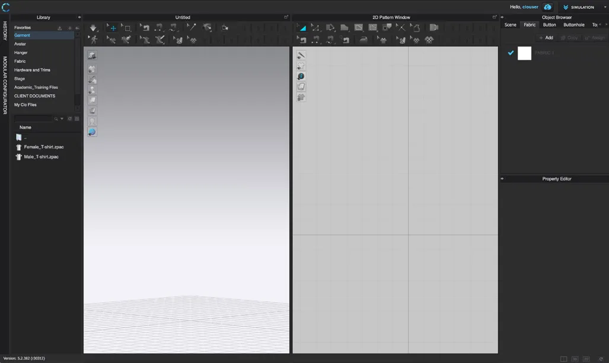
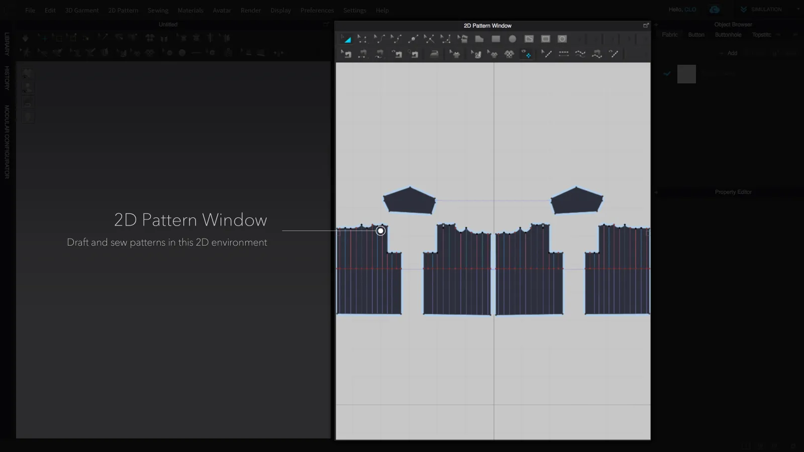
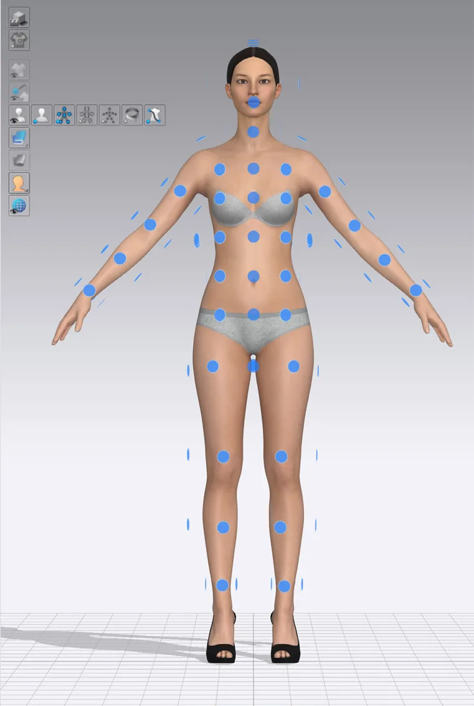
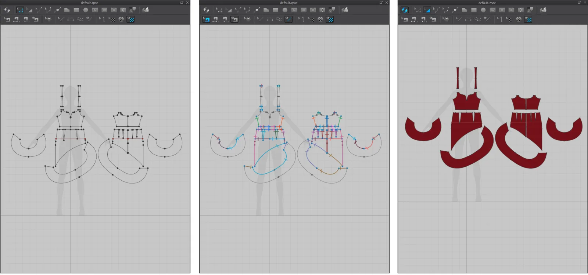

第一章 · 详细图文讲义
补充收录此前 CLO3D BEGINNER’S GUIDE 的讲解、工具表格、课堂英文表达和配图参考。各章节的 CLO 截图均已存为本地资源，并与对应讲解配对。
软件界面详解
CLO3D 可同时显示二维版片与三维服装。2D Pattern Window 用于绘制和编辑版片，3D Garment Window 用于检查穿着、视角和模拟效果。Library 提供资源，Object Browser 管理对象，而 Property Editor 用来调整选中对象的参数。
Object Browser 与 Property Editor 的区别尤为重要：前者主要用于查找和选取对象，后者用于编辑它的属性。单击不同面料，观察 Property Editor 中的参数变化。

| English | 中文 | 说明 / 操作 |
|---|---|---|
| 3D Garment Window | 三维服装窗口 | 查看服装、模特和模拟效果 |
| 2D Pattern Window | 二维版片窗口 | 绘制、编辑、缝纫版片 |
| Library | 资源库 | 查找模特、面料和素材 |
| Object Browser | 对象浏览器 | 管理面料、纽扣、线迹等对象 |
| Property Editor | 属性编辑器 | 更改选中对象的参数 |
| 3D Toolbar | 三维工具栏 | 三维选择、移动和模拟 |
| 2D Toolbar | 二维工具栏 | 绘制与修改二维版片 |
| History | 历史记录 | 管理历史操作状态 |
二维版片工具操作
先从 Transform Pattern 和 Edit Pattern 开始。Transform Pattern 用于调整整片版片的位置、旋转或缩放，而 Edit Pattern 用于改变点、边线和轮廓；不要为了修改领口弧度而缩放整块衣片。Rectangle 适合规则形状，Polygon 适合自由轮廓，Ellipse 适合圆形或椭圆形。
还应认识 Add Point / Split Line（添加点/分割线）、Edit Curvature（编辑曲率）和 Internal Line（内部线）。练习时先画一个矩形，再通过编辑点和曲线将它改为不规则轮廓。

| English | 中文 | 说明 / 操作 |
|---|---|---|
| Transform Pattern | 变换版片 | 对整个版片移动、旋转、缩放 |
| Edit Pattern | 编辑版片 | 修改边、点和局部轮廓 |
| Polygon | 多边形 | 绘制自由形状版片 |
| Rectangle | 矩形 | 绘制矩形版片 |
| Ellipse | 椭圆 | 绘制圆形或椭圆版片 |
| Add Point / Split Line | 添加点／分割线 | 增加控制点 |
| Edit Curvature | 编辑曲率 | 调整曲线形状 |
| Internal Polygon / Line | 内部多边形／线 | 绘制内部结构线 |
| Segment Sewing | 线段缝纫 | 连接两条完整边线 |
| Free Sewing | 自由缝纫 | 自定义缝合位置 |
三维选择、安排与模拟
在三维空间中，Select / Move 用于选择并调整版片，Gizmo 是控制移动与旋转方向的操纵器，Arrangement 用于将版片安排在模特附近。学生必须区分 Move the View（移动观察视角）和 Move the Object（改变对象位置）。
Simulation 根据版片、缝纫、重力与碰撞计算布料垂坠。启动前先确认版片位置与缝合关系，否则版片可能掉落。不同版本的按钮与快捷键可能略有不同。

| English | 中文 | 说明 / 操作 |
|---|---|---|
| Select / Move | 选择／移动 | 选中并调整版片 |
| Gizmo | 变换操纵器 | 沿指定轴移动或旋转 |
| Arrangement | 版片安排 | 将版片安排在模特周围 |
| Simulation | 模拟 | 计算重力碰撞与垂坠 |
| Avatar | 虚拟模特 | 提供服装穿着参照 |
| Garment Rendering | 服装渲染 | 展示面料与外观 |
缝纫工具操作
Segment Sewing（线段缝纫）将两块版片的完整边线连接；先单击第一条线段，再单击第二条线段创建缝纫关系。Free Sewing（自由缝纫）允许自行指定缝合的起始点与终点，适合局部缝合需求。
缝纫在二维版片之间建立连接关系，随后 Simulation 才会依据这些连接来计算布料。对于新手，建议先练习两块简单矩形布料的边缘缝合。

官方教程与动态演示链接
上方四段鼠标与视角演示已使用课堂实录视频。下方链接可打开官方资料继续学习；后续课程可再加入版片编辑、缝纫与模拟的录屏。